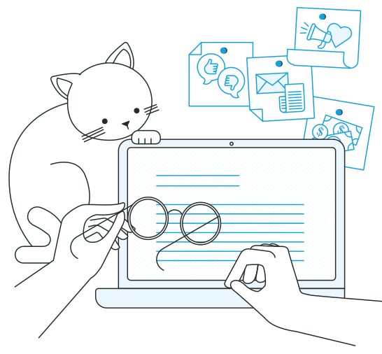

CMS
El CMS está montado en Wordpress 5 sobre PHP 7 para lograr una correcta adaptabilidad y la mejor plataforma para edición de contenidos.
CRM
Se utiliza ODOO para la gestión de usuarios y lectores, poder entender los productos que consumen y encontrar nuevas formas de interacción. ODOO permite el Manejo de datos de clientes CRM, Entendimiento de Productos adquiridos, Target de Intereses por tema o Navegación.
Tecnologías de Pagos
La plataforma está integrada a Mercado Pago, una de las mayores plataformas de cobros online de la Argentina.
Newsletter
Para el envío de mails se utiliza Mailtrain, una plataforma de código abierto que permite la gestión de suscripciones a newsletter. Incluye los servicios de
Gestión de listas, Campos Personalizados, Creación de listas segmentadas, Gestión de Estadísticas de clicks, Editor de plantillas, Soporte de Múltiples plataformas de envío, Automatización.
Etiquetador automático
Esta herramienta es un diccionario inteligente construido con un backend de Tensor Flow. Permite identificar palabras del diccionario de tags de Wordpress y genera un array dinámico de palabras del idioma castellano. Cada periodista puede gestionar el etiquetado automático en su propio artículo o dejar la tarea en manos de los editores.